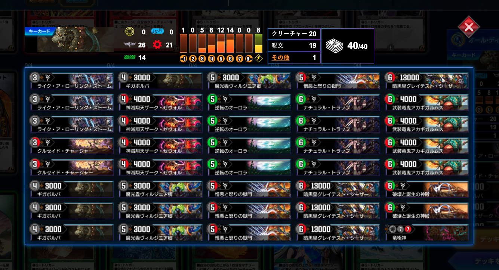

ギガボルバを使いたい

私は天門が嫌いだ
つまり、そういうことだ。
もくじ
- 待望の光トリガー封殺カード
- 意外と入るデッキがない？
- メタカードの難しさ
- ワンショットを狙うデッキを探せ
- ギガボルバを引っ張り出せ
- 自分も光トリガーを使えないぜ
- 対策思考によるデッキ構築の課題
- まとめ
待望の光トリガー封殺カード
ギガボルバは満を持して登場した、光のシールドトリガーを封じるクリーチャーである。
ご存じホーリー・スパークやジャック・アルカディアス、アポカリプス・デイ、ヘブンとバイオレンスの衝撃、そしてヘブンズ・ゲート。
守りを重視する光文明のシールドトリガーは非常に強力で、一度発動してしまうと戦況を覆す。上記のトリガーはどれも非常に強力で、環境で見ない日はあまりない。
もし、相手の光トリガーを封じてくれる存在がいたら、どんなに良いだろう……。デュエプレのサービス開始以来、ずっと願い続けた存在が、今はいる。
私のギガボルバ研究は、偏に長年のヘブンズゲートへの執着から始まったと言っても、過言ではない。
意外と入るデッキがない？
しかし、ギガボルバはどんなデッキにも入るわけではない。
例えば積極的にシールドを割る速攻デッキでは、4ターン目にギガボルバを出したとしてもほとんどシールドが残っていないか、既にヘブンズゲートは発動していることがほとんどだ。出るのが遅い上、ドロー手段もないため引けるとも限らない。
逆に、除去コントロールのようなどっしりと構えたデッキでは、ギガボルバよりも優秀なサファイアなどのフィニッシャーがいる。そもそも光トリガーが発動してもなんとかなるところまで相手を追い詰めることができる上、デッキパワーがギガボルバぶん下がってしまう。
つまり、相手より早く打点を揃え、一斉攻撃で勝負を決めるデッキに向いていると言えそうだ。
メタカードの難しさ
そしてまだ懸念すべき点は残る。ギガボルバは基本的に、他のどのカードにもシナジーを持たないという点だ。
闇文明のコスト4のキマイラクリーチャーは、デュエプレには今のところ進化クリーチャーもないし、数自体少ない。とてもではないが、種族デッキとして纏めることもランクマッチではほぼ不可能だ。
デュエプレではさまざまな過去のスーパーレアカードが実践向きに調整されており、それを支えるカードたちによる「強い動き」をすることができる。
それらのコンボを崩すために対策カードも用意されている（ギガボルバもその一つだ）。ただ、特定のデッキを対策すると、必然的に他のデッキに弱くなるという矛盾が根本にある。対策したデッキにマッチングできなければ勝てなくなってしまう。
それでは、そもそも対策させられた時点で不利に立っているようなものだ。
つまり、デッキの根幹を対策目的にせず、まず「自分の強い動き」を取り入れ、その流れの中にスムーズに対策カードが入ってくるというのが理想だ。
グレートメカオーにおけるコンクリオンなどが良い例だろう。
そして、ギガボルバには特にそういう相手がいない。逆にいえば自由だが、どのデッキでも中途半端な立ち位置になり、最後には抜けていってしまう。
ワンショットを狙うデッキを探せ
ギガボルバを、自分の強い動きを維持したまま採用できるデッキを探す。
現段階で一番完成度が高いデッキとしては、ADでのドルゲーザが見つかった。
典型的な盤面に数を並べて押しつぶすデッキであり、西南の超人のコスト軽減とドルゲーザの大量ドローはまさに宇宙。ここにギガボルバを2枚、闇トリガーを2枚突っ込んだ。
ドルゲーザの5~6枚の大量ドロー、二角の超人のマナ回収、そしてサイバゴンのサーチのおかげでたった2枚しか入っていないギガボルバも安定して手札に呼び込むことができ、ついでの余ったマナで召喚しワンショットを決めることができる。
ドルゲーザの弱点がホーリースパークでの逆転、アポカリプスデイでの一層、ヘブンとバイオレンスの衝撃による西南の無効化だったため、ギガボルバの能力が相手に突き刺さる。それ以外のデーモンハンドなどの単体除去は、高パワーで大量展開するジャイアントにはほぼ間に合わないので問題ない。
正直ギガボルバの内定先としてはこれ以上ない筋肉現場デッキだと思う。ADでは1日でマスターランクに到達できた。
ギガボルバを採用した黒緑ドルバロムはランクマッチでも結果を残しているデッキとして有名だ。
元々ガラムタでトリガーケアを行なっていたものの、そちらがNDで使えなくなってもドルバロムは光トリガーを封殺できるだけで強いということがわかってからはギガボルバが代役を務めている。
リソースのかなり乏しい黒緑のため、やはり必要なギガボルバを用意できるとは限らない部分が問題だった。ドルバロム着地後の数ターンだけギガボルバを待つ、ヘックスペインでサーチする、口寄せの化身でドローする……などの手段がメジャーだ。
最近はDEATHドラゲリオンを獲得し、ビート系相手にある程度強引に突破することもできるようになってきたが、できればギガボルバを用意できると嬉しい。
ギガボルバはあれば欲しい、だが引けないので泣く泣く抜くという、典型的なデッキの一つだと思う。
続いてはドロマーナイト。10弾時点で組んでみたデッキだったが、ギガボルバが良い仕事をしてくれた。
ナイトで盤面を掌握し、ロレンツォを並べて味方を選ばれなくすることで単体除去トリガーのケアができており、あとはスパークと天門への詰め対応が課題だった。
オープンブレインにより大量の手札が確保できるため、ギガボルバを引くことは問題がない。さらにインフェルノゲートの採用で墓地からギガボルバの復活も行える。
当時としては個人的にかなり完成度が高かったが、のちにネログリフィスやグレイテストシーザー、ヘヴィデスメタルがナイトデッキのフィニッシャーを兼ねるようになったため、ギガボルバを採用するというデッキの目的が失われてしまった。
ついでに言うと、ナイトで丁寧にコントロールするより積極的に殴りに行きたかったため、自分との相性がそこまで良くなかった。
こちらはビッグバン・アナスタシス。
ギガボルバが引けなくとも、山札から一気に踏みたせば良いという理由で内定。
特にビッグバンの弱点である「召喚してもスパークかアポデイ、天門を踏むと負ける」というところがギガボルバにより解消された。
悪くないデッキだが、できればボルパンサーの相手クリーチャー破壊効果を使いたいためキマイラであるギガボルバの肩身は狭い。どちらかと言うとスペルデルフィンの方がビッグバンには合っていると言う理由で、保留。
このデッキでのギガボルバはスペルデルフィンより軽くて安いのが売りだが、ビッグバンの「自分の強い動き」の邪魔になってしまう。ビッグバンで毎回場に出せるとも限らないのに4枚積むのもあまりスマートとは言えないかもしれない。
ギガボルバを引っ張り出せ
相手が天門などの致命的な光トリガーを搭載しているデッキだとわかったとき、こちらもできるだけギガボルバを用意しやすい構築にしたい。
前述した通り、ギガボルバは闇のコスト4パワー3000というとても平均的なスペックをもつ。つまりサーチするにしても大抵のカードと探索条件が同じため、狙って持ってくることは難しい。
ここでは、比較的現実的なギガボルバを用意する手段であり、かつ光トリガーを封殺するメリットが生じそうな例を挙げる。
ゲキは墓地からコスト4のクリーチャーを場に出すことができる。事前にギガボルバを墓地に落としておけば、ゲキメツを使ったフィニッシュ時に流れるようにギガボルバの封殺が活きる。
クルセイドチャージャー、ゴッドシグナル、ドボルザークなどの殿堂入りしたゲキメツをサーチする手段も豊富なため、かなり現実的と言えるだろう。特にクルセイドチャージャーはギガボルバを墓地に落としながらゲキメツを用意するため無駄がないぞ。
ただしゲキメツを使うとなるとデーモンハンドなどの確定除去も痛くなるので、ある程度クリーチャーを横並びさせるような構築も必要になりそうだ。
エターナルサンクチュアリで相手のコスト4のカードを破壊すれば、デッキに2枚程度ギガボルバを挿すだけでも場に出すことができる。相手依存であるため能動的に使えないという欠点は紙から変わっていない。
が、デュエプレは強いデッキがネットで拡散しやすく、特にランクマでは似た構築・似た戦術が流行るため環境次第でエターナルサンクチュアリが活躍することがこれまでわかってきた。
（かつて天門対策でコスト9のザーディアをエターナルサンクチュアリで破壊し、スペルデルフィンを出すと言うカウンター戦術がランクマッチで結果を残したことがある）
デッキが光トリガーを採用しがちで、かつそこに入ってくる「サンクチュアリがギガボルバを対象にとれる」汎用コスト4パワー6000以下のカードは、
- ジャックアルカディアス
- ボルシャリオ
- モノノフルピア
- エコアイニー
- ブレードワーム
- スペースクロウラー
- デ・バウラ伯
- キャプテンミリオンパーツ
- ピラミリオン
- バンジョー
- ヴォイジャー
- センチネルドラゴン
- アクアン
などが挙げられた。非常に的が多いことがわかる。
エターナルサンクチュアリ自体がリソース確保が難しい火自然のカードであるため、ギガボルバをサーチする以前にエターナルサンクチュアリをサーチしなければならないという懸念はある。
アルバトロスは破壊された時に墓地からコスト5以下のクリーチャー2種をスピードアタッカーにして場に出す。非常によく使われるフィニッシャーであり、事前にギガボルバを墓地に用意できれば光トリガーを封殺しながら攻めることができる。
……が、アルバトロスが真価を発揮するのは相手のシールドが0枚の状態で特攻を仕掛ける場面であり、例えばシールドがある状態でアルバトロスをわざわざブロックするものはいない。
果たして光トリガーを事前に封じるギガボルバとアルバトロスに、どれだけシナジーがあるかはわからない。
逆に時すでにおすし、天門が発動してしまっている状況でのサブプランにするという採用理由もあるかもしれない。
インフェルノサインは墓地からコスト7以下のクリーチャーを場に出すことができるシールドトリガーだ。
非常に汎用性が高いカードでギガボルバと色も合うものの、若干ギガボルバの平均的なスペックが気になる。低コストクリーチャーが多いデッキでは墓地での探索濁りが発生しやすいため、ギガボルバを出すためには相当構築とプレイングに気を遣う必要がありそうだ。
また墓地を肥やしながらのビート戦術はデュエプレでは未開拓であり、果たして速度・突破力を両立させられるのかはわからない。その戦術をとるロマノフ・バルクライ王がケアしたいのは、光トリガーよりもデーモンハンドや花籠などの単体除去トリガーのような気もする。
盤面を整えギガボルバを最後に詰めで出すデッキで、インフェルノサインがどこまで使いやすいカードなのかは未知数だ。
エターナルサンクチュアリ、インフェルノサインを活用するとなると、それらの呪文を踏み倒せるグレイテストシーザーも視野に入ってくるかもしれない。だがシーザーはシーザーで、ギガボルバで封殺するなら超銀河弾HELLでシールドを焼いた方がいい気もする。
バグナボーンは攻撃時にマナからパワー3000以下のカードを場に出す。範囲としてはかなり広いものの、序盤に不要なギガボルバをマナから場に出す効果はかなり使いやすい。墓地や山札と違って、マナはある程度コントロールしやすいのも良い。
バグナボーン自体がまあまあ重いため、これに攻撃させるのがまず難しい。カチュアで呼ぶ使い方があるが、そちらはサファイアでシールド焼却したり、バイオレンスサンダーで制圧する方が手堅い気がする。
バルガライゾウに対応しているため、スペルデルフィンの他にバグナボーンでギガボルバを召喚することでさらにトリガー封殺力を高める……やっぱりサファイアとデルフィンでいいかもしれない。
バグナボーンの「ドラゴン」と言うスペックの高さが、ギガボルバによるトリガーケアをあまり必要としていない点が懸念される。
自分も光トリガーを使えないぜ
私は天門が嫌いだが、その言い方は少々語弊がある。
正確には「相手が使う天門」が嫌いだ。自分が使う天門は大好き。そういうことだ。多分あなたも同じだろう。わかる。
とはいえ、ギガボルバを使う以上は自分も光トリガーによる防御を期待できなくなる。
例えば黒ガントラや黒ドリメなど、アルバトロスやデモハンを期待し闇文明を入れたビートデッキはランクマで非常に活躍した。それらにはスパーク系トリガーも搭載されており、一定の防御力も確保している。
これらのデッキこそギガボルバも搭載すれば完璧のような気もするが、同型ミラーマッチになった時にギガボルバを出した返しのターンに自分のスパークが発動せずに負ける、といった事態を引き起こしやすくなる。はははかわいいやつめ許さん。
ビート系デッキの強みとして、先に攻め込んでおいてラス盾スパーク（自分の最後のシールドがスパークなら結局勝ち）で待ち構えることがある。これによりガントラやドリームメイトは登場以来長くランクマッチの常連として活躍している。
ビート系が勝率を上げるとなると、色が濁ったとしても4枚はスパークをタッチするのは、もはや鉄板といえるだろう。
ギガボルバを採用してビートダウンを仕掛けるとなると、そのスパークを使えなくなるというのは無視できないデメリットだ。その点、先に挙げたドルゲーザは水自然基盤でギガボルバも無理なく使えているため、本当に理想のデッキの一つと思えている。
対策思考によるデッキ構築の課題
今回は、特定の強いデッキを対策するという視点から構築が始まった。
デッキ構築の出発点はさまざまだが、負け続けると特に「あのデッキに負けないデッキが欲しい」という考え方になることが多いと思う。事実今回のギガボルバも、長年の天門への恨み辛み妬み憎しみから出発したものだ。
が、冒頭でも述べたように「自分の強い動き」に沿わない形での対策カードの採用は、むしろ相手の構築に縛られて自分の動きを阻害する結果になりがちだ。特に自分の動きを押し通すビートダウン系のデッキは往々にしてその沼にハマりやすい。
除去コントロールのように、徹底的に環境カードを対策していくことによって「自分の強い動き」が生まれるという例もある。が、それは除去コントロール系は妨害に特化しているから成立する。
相手・環境に依存せず、あくまで自分の動きに沿った形で環境に適応することを目指す。
という方針を改めて自分で振り返った形だ。
まとめ
なんか書いてるうちに最強デッキ思いついたんだけど……
ちょっとランクマ行ってくる